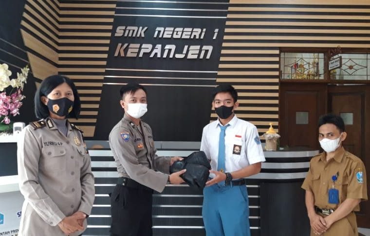

MEMBANGGAKAN, SISWA SMKN 1 KEPANJEN MENDAPATKAN JUARA AJANG KICK BOXING DARI TINGKAT KABUPATEN HINGGA NASIONAL

Senin (5/9/2022) SMK Negeri 1 Kepanjen mendapatkan kunjungan secara langsung oleh perwakilan dari Polsek Kepanjen. Kunjungan kali ini adalah untuk menyerahkan simbolisasi berupa sarung tinju kepada siswa XI TEI Abbewaiz Joel Marcell Fe Bahari atas perolehan Juara 1 pada ajang Kick Boxing Kabupaten Malang 2021.Dengan didampingi Waka Kesiswaan Bapak Amiruddin Atimurahman, S.PdI, sambil memegang sarung tinjunya siswa yang kerap disapa Abbe ini berfoto bersama dengan Bapak Ibu Polisi dari Polsek Kepanjen. Selain lomba tingkat kabupaten sebelumnya Abbe juga sudah mendapatkan piala dari beberapa kejuaraan antara lain :
1. Seleksi nasional ASTA Surakarta 2021 (juara2)
2. Kejuaraan Kickboxing kabupaten malang 2021 (juara1)
3. Piala wakil bupati Blitar muaythai Championship 2021 (juara2)
4. Kejuaraan propinsi Kickboxing Jawa timur 2021 (juara 1)
5. ASTA malang fighting championship 2022 (juara 1)
Semoga kemenangan yang di raih Ananda Abbe dapat menjadi semangat untuk perjalanan menuju pencapaian ke tingkat selanjutnya.